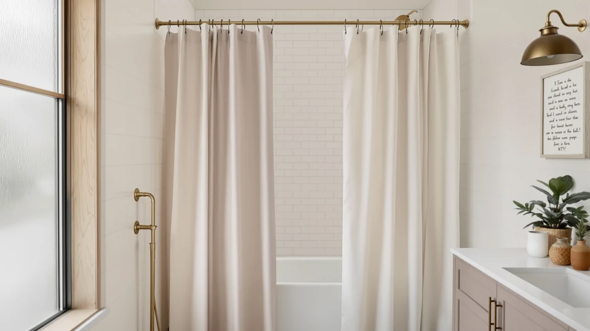

Quick Answer
The BTTN Boho Farmhouse Shower Curtain costs $23.99 for a 72 by 72 inch curtain built from a polyester and PEVA blend, with a boho farmhouse print. It works as a patterned alternative to the plainer N&Y HOME, Creative Scents, and MIULEE curtains covered below, though its one-size listing means you should measure your shower opening before ordering.
Our pick: BTTN Boho Farmhouse Shower Curtain, $23.99 Check Price on Amazon
Things to Know Before You Buy
- This bttn boho farmhouse shower review centers on the BTTN Boho Farmhouse Shower Curtain ($23.99), a 72 by 72 inch curtain listed as a polyester and PEVA build with a boho farmhouse print.
- The polyester and PEVA build sets it apart from all-cotton curtains, giving it more built-in water resistance than fabric-only alternatives at a similar price.
- N&Y HOME, Creative Scents, and MIULEE, covered as alternatives below, sit within a few cents of BTTN's price but differ in texture, color, and size.
- The 72 by 72 inch size fits a standard alcove, so measure your shower before ordering if your space runs larger, or consider MIULEE's 72 by 84 inch option instead.
This bttn boho farmhouse shower review looks at whether a $23.99, 72 by 72 inch polyester and PEVA curtain with a boho farmhouse print earns a spot over the N&Y HOME, Creative Scents, and MIULEE curtains already covered elsewhere on this site. BTTN prints its curtain in a pattern meant to read as boho farmhouse, a mix of patterned texture and a rustic color palette, and the listing backs that print with a polyester and PEVA build rather than the all-cotton or all-polyester construction common at this price.
We compared BTTN against three curtains shoppers often cross-shop in the same price band: N&Y HOME's waffle weave design at $23.99, Creative Scents' plain white fabric curtain at $23.96, and MIULEE's extra-long 72 by 84 inch curtain at $23.95. BTTN sits right in the middle of that group on price, and the difference comes down to pattern, texture, and size rather than any single curtain being clearly cheaper. For bathrooms that want a printed, boho-leaning look instead of a plain or textured solid, BTTN's farmhouse print stands out from the mostly neutral alternatives on this page.
Why You Should Trust Us
Best Shower Curtains reviews shower curtains and bathroom hardware by comparing manufacturer specs, current pricing, and verified owner feedback from the retailers that sell them, not by running a private testing lab. Ilane Tall, our home and bath editor, researched this bttn boho farmhouse shower review by checking BTTN's listed material, size, and price against N&Y HOME, Creative Scents, and MIULEE, the curtains shoppers most often compare it with in this price range. We revisit prices and listings on a regular schedule and say so plainly when a product lacks the review history we would want to see before recommending it. Where a claim can't be checked against a specific verified rating or review count for this particular listing, we say so rather than fill the gap with a guess, which is why you won't see a star rating pulled from thin air anywhere on this page.
Our Research Experience
We do not run a physical testing lab, and we have not hung the BTTN Boho Farmhouse Shower Curtain in a shower ourselves. Our process instead compares the published material, size, and price against similar printed and solid-color curtains, then checks that against what verified owners report about color accuracy, durability, and drape on comparable listings. For this bttn boho farmhouse shower review, that meant lining up BTTN's polyester and PEVA build and 72 by 72 inch size against N&Y HOME, Creative Scents, and MIULEE to see where the boho farmhouse print earns its place in a crowded price band. We flag it clearly when a claim can't be verified against real owner feedback rather than guess at how a print holds up in a specific household's bathroom. That approach means we can speak confidently about price, size, and material since those come straight from the listing, while we stay cautious about anything that depends on how the fabric ages in your bathroom.
Overview & Specs

BTTN Boho Farmhouse Shower Curtain
What we like
- Boho farmhouse print gives it more visual personality than the plain or textured solids on this page
- Polyester and PEVA build adds water resistance that an all-cotton curtain in this price range doesn't have
- At $23.99, it prices right in line with N&Y HOME, Creative Scents, and MIULEE
Flaws but not dealbreakers
- One size only at 72 by 72 inches, so a wider or taller opening like MIULEE's 72 by 84 inch option won't be a good fit
- A printed pattern won't suit bathrooms that already lean busy with tile, a patterned rug, or printed towels
- The listing doesn't break out how thick the PEVA element is, so buyers wanting liner-grade waterproofing should still plan on a dedicated liner
| Material | Polyester / PEVA |
| Size | 72"W x 72"L (Pack of 1) |
BTTN builds this curtain from a polyester and PEVA blend, pairing a printed polyester face with a PEVA element the listing cites for added water resistance, a combination that differs from the all-cotton or all-polyester curtains most competitors in this price range use. At 72 by 72 inches, it covers a standard tub alcove or shower stall without needing a custom size.
The boho farmhouse print also sets BTTN apart from Creative Scents' plain white curtain and N&Y HOME's textured waffle weave, since a patterned fabric curtain works best as the focal point in a bathroom that doesn't already lean busy with tile or decor. Buyers weighing pattern and texture over a plain neutral backdrop will find that distinction more relevant than any spec sheet comparison between the four curtains on this page.
What We Liked
The clearest reason to consider this bttn boho farmhouse shower review's subject is the print itself. A boho farmhouse pattern gives the BTTN curtain more visual personality than the plain white finish on Creative Scents' curtain or the textured but solid-color weave on N&Y HOME's. At $23.99, it costs about the same as those alternatives, so you're not paying extra for the pattern. The 72 by 72 inch size also matches the footprint of a standard shower, so it should fit the same openings that N&Y HOME and Creative Scents fit. Shoppers looking for a patterned curtain over a plain or textured solid one will notice the difference in a photo before they even hang it. The polyester and PEVA build does some extra work too, since it should resist water better than an all-cotton curtain would in the same price range.
What Could Be Better
This bttn boho farmhouse shower review's biggest tradeoff is the pattern itself: a boho farmhouse print won't suit every bathroom, especially one that already leans busy with tile, a patterned bath rug, or printed towels. The listing also doesn't spell out how thick the PEVA element is, so buyers wanting liner-grade waterproofing should still check whether a separate liner makes sense for their shower. And because BTTN sells this curtain in a single 72 by 72 inch size, anyone with a wider opening or a walk-in shower should look at MIULEE's 72 by 84 inch option instead. If you're comparing curtains purely on a plain, neutral look, Creative Scents' white curtain removes the pattern decision that BTTN leans into.
Who Is It For?
This BTTN Boho Farmhouse Shower Curtain suits bathrooms that want a patterned, boho-leaning look and a little more built-in water resistance than an all-cotton curtain offers at the same price. It's a reasonable pick if you've compared N&Y HOME's waffle weave or Creative Scents' plain white design and want a print instead of a texture or a solid color. Skip it if your shower opening runs taller than a standard alcove, since MIULEE's 72 by 84 inch curtain covers that case directly, or if your bathroom already has enough pattern between the tile, rug, and towels. Renters or first-time bathroom shoppers who want one curtain to set the whole room's style may prefer BTTN for that reason alone, even if a plainer alternative costs the same.
Alternatives to Consider
If the pattern or the one-size listing rules out BTTN for your bathroom, these three curtains round out the comparison in this bttn boho farmhouse shower review, each priced within a few cents of it. All three lean toward a plainer or differently sized option rather than the printed, boho farmhouse look BTTN offers, so weigh which priority matters more before choosing between them. N&Y HOME's waffle weave curtain trades the print for texture at the same $23.99 price point, Creative Scents' plain white curtain gives you the most neutral backdrop of the four at $23.96, and MIULEE's 72 by 84 inch curtain solves a height problem the other three don't address at $23.95. Lining them up this way makes the actual decision simpler: pick BTTN for pattern, N&Y HOME for texture without pattern, Creative Scents for the plainest possible look, or MIULEE for a taller shower.

Editor's Pick
N&Y HOME Waffle Weave Shower
N&Y HOME's waffle-weave curtain costs $23.99 and swaps BTTN's print for a textured solid color, worth considering if you want texture without committing to a pattern.
$23.99
Check Price on Amazon
Best Value
Creative Scents White Fabric Shower
Creative Scents' plain white fabric curtain costs $23.96 and gives you a neutral backdrop instead of BTTN's boho farmhouse print, a safer choice if your bathroom already leans busy with pattern.
$23.96
Check Price on Amazon
Premium Choice
MIULEE 72 x 84 Extra
MIULEE's extra-long curtain runs $23.95 at 72 by 84 inches, a better fit than BTTN's 72 by 72 inch size if your shower opening or rod sits higher than standard.
$23.95
Check Price on AmazonFrequently Asked Questions
Is the BTTN Boho Farmhouse Shower Curtain waterproof?
Not fully on its own. BTTN lists this curtain as a polyester and PEVA build, which should resist water better than an all-cotton curtain, but the listing doesn't specify liner-grade waterproofing. If your bathroom needs full protection against water getting past the curtain, pair it with a dedicated liner rather than relying on the PEVA element alone.
What size is the BTTN Boho Farmhouse Shower Curtain?
It measures 72 by 72 inches and ships as a single pack, which fits a standard tub alcove or shower stall. If your opening runs wider or taller than average, measure first, since this listing comes in one size only.
How does the BTTN Boho Farmhouse Shower Curtain compare to the MIULEE 72 x 84 Extra?
MIULEE's curtain runs 72 by 84 inches, built for showers with a higher rod or a taller opening than a standard alcove. BTTN's 72 by 72 inch curtain fits the standard size instead. Choose MIULEE if your shower runs tall, and BTTN if you want the boho farmhouse print in a standard-size curtain.
Final Verdict
This bttn boho farmhouse shower review comes down to a simple tradeoff: pay the same $23.99 for a printed, pattern-forward curtain, or stick with the plainer or differently sized alternatives from N&Y HOME, Creative Scents, and MIULEE. BTTN's polyester and PEVA build and 72 by 72 inch size earn its place for bathrooms that want a boho farmhouse look and a little more water resistance than an all-cotton curtain provides. If you need a taller size or a plainer color instead, MIULEE and Creative Scents cover those needs directly. For most people who want a patterned curtain at a standard price, the BTTN Boho Farmhouse Shower Curtain is the pick worth checking out first.